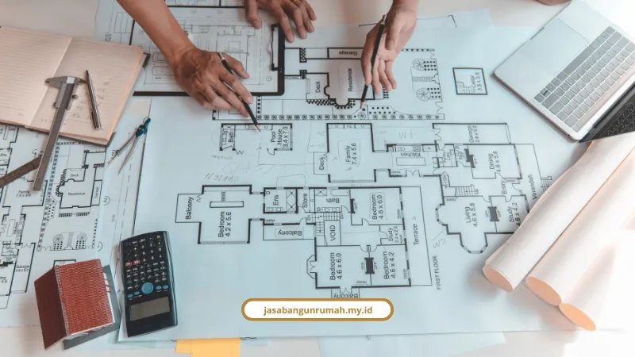

Daftar Isi
Kalau Anda sedang mencari jasa bangun rumah Jakarta yang jelas hitungannya, aman izinnya, dan hasilnya masuk akal, jawabannya sederhana: pilih mitra yang menulis RAB dengan transparan dan memberikan garansi struktur tertulis sejak awal.
Kami melayani Jakarta dengan sistem itu sejak 2010 dan membantu klien memahami tiap tahap dari perencanaan hingga serah terima kunci. Tujuannya bukan sekadar membangun rumah, tetapi meminimalkan risiko yang sering bikin proyek berakhir drama.
Jakarta punya tantangan tersendiri: lahan sempit, aturan tata kota yang kompleks, serta banyak kasus kontraktor kabur setelah uang masuk. Oleh karena itu, keputusan paling aman adalah memilih studio design & build yang punya laporan progres, legalitas jelas, dan dokumentasi proyek yang rapi.
Berapa Estimasi Biaya Bangun Rumah per M² di Jakarta 2025/2026?
Estimasi biaya bangun rumah Jakarta 2026 berkisar antara Rp3,5 juta hingga Rp10 juta lebih per meter persegi, tergantung spesifikasi, desain, dan tingkat finishing yang dipilih.
- Minimalis/Sederhana: Rp3,5 juta - Rp5,5 juta per m²
- Minimalis Modern: Rp5,2 juta - Rp6,5 juta per m²
- Minimalis Mewah/Custom: Rp6 juta - Rp10 juta lebih per m²
Di Jakarta, indeks biaya sekitar 30 persen lebih tinggi dibanding kota kecil karena logistik material, keterbatasan lahan, dan standar upah tenaga kerja yang lebih tinggi. Jadi, angka per m² sering terasa lebih berat, tetapi hasil akhirnya juga tergantung kualitas struktur, material, dan pengawasan proyek.
Secara umum, proporsi RAB standar terdiri dari:
- Pondasi & pekerjaan tanah: sekitar 19%
- Struktur & dinding: sekitar 33%
- Atap & rangka: sekitar 17%
- Finishing: sekitar 18%
- Instalasi MEP: sekitar 11%
- Perizinan PBG & administrasi: sekitar 2%
Banyak klien tergoda memilih tukang lepas karena dianggap lebih murah. Padahal selisih 15-25 persen bisa berubah menjadi biaya tambahan besar saat ada kesalahan teknik, pembengkakan material, atau revisi desain di pertengahan proyek. Sistem RAB yang transparan jadi kunci agar risiko tersebut bisa diminimalkan sejak awal.

Bagaimana Aturan Legalitas Bangun Rumah di Jakarta Sesuai Pergub DKI No. 20/2024?
Saat ini, legalitas bangun rumah di Jakarta berfokus pada PBG (Persetujuan Bangunan Gedung), yang menggantikan IMB. Dokumen ini berlaku setelah UU Cipta Kerja dan PP No. 16 Tahun 2021.
Pengajuan dilakukan secara digital melalui portal SIMBG dengan dokumen seperti KTP, SHM/HGB, KRK/KKPR, serta gambar teknis DED dari arsitek, struktur, dan MEP yang dibuat tenaga ahli bersertifikat. Bukan hanya sekadar administrasi; PBG berkaitan dengan keselamatan teknis, ketahanan struktur, dan kepatuhan tata ruang.
- KDB & KLB: mengikuti RDTR zonasi setempat
- GSB: berpedoman pada lebar jalan dan zona bangunan
- Pagar: tinggi maksimal 3 meter di samping/belakang
- Peil lantai dasar: maksimal 1,20 meter dari elevasi jalan
- Zero Run Off: wajib ada sumur resapan atau sistem retensi air
Selain aturan tata bangunan, klien juga perlu memastikan kontraktor punya legalitas jelas, mulai dari NIB, SBU subklasifikasi bangunan gedung, hingga tenaga kerja yang bersertifikat SKK/SKA/SKT dengan perlindungan BPJS Ketenagakerjaan. Tanpa legalitas resmi, proyek bisa berisiko tidak hanya soal biaya, tetapi juga keamanan struktural jangka panjang.
Kenapa Garansi Struktur dan SPK Itu Wajib Ada?
Elemen seperti pondasi, kolom, balok, dan struktur utama bukan biaya dekoratif, melainkan bagian yang menentukan keamanan jiwa dan keawetan bangunan. Karena itu, garansi struktur rumah harus diikat jelas dalam kontrak.
Kami memberikan masa garansi 1 sampai 2 tahun atau lebih untuk struktur, serta garansi purna pengerjaan atau finishing selama 3 sampai 6 bulan setelah serah terima kunci. Dalam SPK kami, klien juga bisa melihat:
- Rincian spesifikasi material dan RAB yang transparan
- Skema pembayaran termin yang jelas
- Denda keterlambatan bila proyek melewati jadwal
- Klausul larangan pindah tanggung jawab ke subkontraktor ilegal
- Prosedur penyelesaian sengketa yang pasti
Detail lebih lanjut soal jangka waktu garansi tiap komponen dapat Anda lihat di artikel tentang biaya bangun rumah per m² serta pembahasan tips memilih kontraktor terpercaya.
Mengapa Memilih Jasa Bangun Rumah Jakarta?
Kami memakai pendekatan design & build karena klien tidak perlu bolak-balik antar arsitek dan kontraktor yang saling lempar tanggung jawab. Satu tim menangani konsep, perencanaan, struktur, pembangunan, sampai finishing.
Beberapa layanan yang kami sediakan meliputi:
- Jasa Arsitek dan desain rumah
- Jasa Kontraktor Rumah dari nol
- Jasa Kontraktor Bangunan komersial
- Jasa Renovasi bangunan dan gedung
- Jasa Desain Interior lengkap
Untuk gambaran nyata, kami juga menyediakan simulasi biaya bangun rumah Jakarta sesuai kebutuhan proyek. Ketimbang hanya membaca estimasi umum, ada baiknya Anda konsulkan kebutuhan rumah dan lahan Anda secara gratis agar hitungan lebih akurat.
Berapa Lama Waktu Pengerjaan Bangun Rumah 2 Lantai di Jakarta?
Untuk rumah 2 lantai seluas 150-200 m², rata-rata waktu pengerjaan sekitar 4 sampai 6 bulan, dihitung dari awal pondasi hingga finishing. Lama proses bisa berubah tergantung kompleksitas desain, kontur tanah, dan kecepatan proses PBG.
Yang penting, selama proses berjalan Anda akan mendapatkan laporan progres berkala agar tidak perlu datang ke lokasi setiap hari. Dengan tim yang tertata, pengawasan jadi lebih konsisten, dan keputusan bisa dibuat lebih cepat saat ada perubahan kebutuhan.